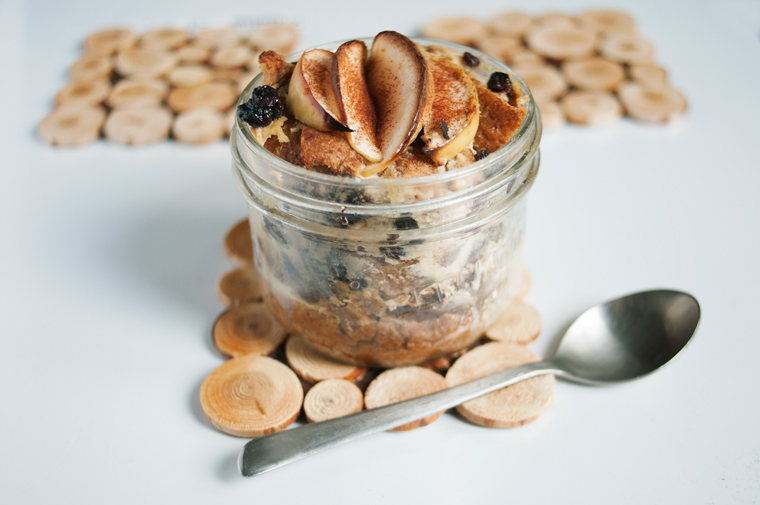

mason jar bread pudding
1 serving — 30 minutes
Growing up bread pudding was Rek's favorite dessert. Rek's mom used bread crusts leftover from christmas dinner (from making no-crust sandwiches) to make bread pudding. She cooks by feel, always has. She never writes anything down. Rek stood by her as she made it, taking notes of the approximate quantities and various steps.
Rek's mom comes from a family of 7 girls, she grew up cooking for the family. When cooking for the family, she'd always prepare a basin-load of food. Her bread pudding recipe is no different. Rek's dad has no trouble going through all of it.
We are good eaters, but there's no way we can eat that much dessert, so we reduced and reduced, until it fit a wide-mouth 1/4 l(1 cup) mason jar.
If ever you have some leftover crusts try and make this, it's easy, delicious and comforting, and scales well enough. A Rek's mom would say, 'do it by eye'.
 soft tofu90 g
soft tofu90 g soy milk80 ml
soy milk80 ml vanilla extract1.25 ml
vanilla extract1.25 ml bread crusts20 g, packed
bread crusts20 g, packed dried raisins9 g
dried raisins9 g apple1, small
apple1, small natural brown sugar5 g
natural brown sugar5 g cinnamon1.25 g
cinnamon1.25 g maple syrup15 ml
maple syrup15 ml
bread pudding
- Preheat oven at 180 °C (350 °F)
- Combine 90g (~1/4 cup) of soft tofu, 80 ml (1/3 cup) of soy milk and 1.25 ml (1/4 tsp) of vanilla extract. Blend until smooth.
- Take a 250 ml (1/2 pint) wide-mouthed mason jar. Fill it up halfway with bread crusts. Cut 1 apple into two, then slice the half into tiny cubes, add to the jar. Then add 9 g (1 tbsp) of dried raisins. Pour liquid to cover until it's level with the bread crusts
- Cover with more bread crusts and dried raisins. Pour more liquid onto it, until the jar is about 3/4 full.
- Sprinkle 5 g (1 tsp) of commercial brown sugar on top, decorate with apple slices (use the other half of the apple), add 1.25 g (1/4 tsp), cinnamon and 15 ml (1 tbsp) of maple syrup overtop.
- Cook for 20-25 minutes, or until the top is browned. Let cool, drizzle with some maple syrup and enjoy! >